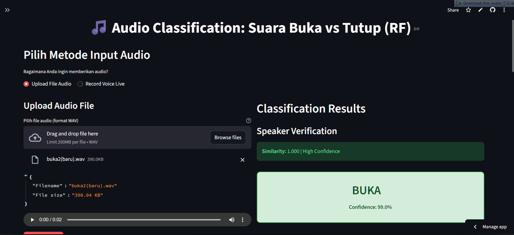

Deployment Identifikasi Suara Buka Tutup#
Disini Untuk Deployment saya menggunakan streamlit. Untuk identifikasi suara buka tutup dapat di akses melalui link berikut ini: https://identifikasi-suara-buka-tutup-v2-random-forest.streamlit.app/
Tampilan Website Deployment#

Code Program Deploy#
import streamlit as st
import os
import librosa
import numpy as np
import pandas as pd
from scipy import stats
import joblib
import matplotlib.pyplot as plt
import plotly.graph_objects as go
import plotly.express as px
import tempfile
import soundfile as sf
from audio_recorder_streamlit import audio_recorder
from st_audiorec import st_audiorec
import pickle
st.set_page_config(
page_title="Audio Classification: Buka vs Tutup (RF)",
page_icon="🎵",
layout="wide",
initial_sidebar_state="expanded"
)
st.markdown("""
<style>
.main-header {
font-size: 2.5rem;
color: #1f77b4;
text-align: center;
margin-bottom: 2rem;
}
.prediction-box {
padding: 1rem;
border-radius: 10px;
margin: 1rem 0;
text-align: center;
}
.prediction-buka {
background-color: #d4edda;
border: 2px solid #28a745;
color: #155724;
}
.prediction-tutup {
background-color: #f8d7da;
border: 2px solid #dc3545;
color: #721c24;
}
.prediction-unregistered {
background-color: #fff3cd;
border: 2px solid #ffc107;
color: #856404;
}
.feature-info {
background-color: #f8f9fa;
padding: 1rem;
border-radius: 5px;
margin: 0.5rem 0;
}
.warning-box {
background-color: #fff3cd;
border: 2px solid #ffc107;
padding: 1rem;
border-radius: 10px;
margin: 1rem 0;
text-align: center;
color: #856404;
}
</style>
""", unsafe_allow_html=True)
st.markdown('<h1 class="main-header">🎵 Audio Classification: Suara Buka vs Tutup (RF)</h1>', unsafe_allow_html=True)
@st.cache_resource
def load_model():
try:
model = joblib.load('saved_models/rf_model_buka_tutup.pkl')
return model, True
except FileNotFoundError:
st.error("Model tidak ditemukan! Pastikan file 'saved_models/rf_model_buka_tutup.pkl' tersedia.")
return None, False
@st.cache_resource
def load_speaker_profiles():
"""Load speaker voice profiles for verification"""
try:
with open('speaker_profiles.pkl', 'rb') as f:
profiles = pickle.load(f)
return profiles, True
except FileNotFoundError:
st.warning("Speaker profiles tidak ditemukan. Sistem akan menggunakan mode tanpa verifikasi speaker.")
return None, False
def extract_only_selected_features(y, sr=22050):
"""
Extract only the 5 selected features with >50% importance
"""
feats = {}
# 1. stat_skew
feats['stat_skew'] = stats.skew(y)
# 2. chroma_0_mean
chroma = librosa.feature.chroma_stft(y=y, sr=sr)
feats['chroma_0_mean'] = np.mean(chroma[0])
# 3. mel features (6 & 7)
mel_spec = librosa.feature.melspectrogram(y=y, sr=sr, n_mels=10)
feats['mel_6_std'] = np.std(mel_spec[6])
feats['mel_7_mean'] = np.mean(mel_spec[7])
feats['mel_7_std'] = np.std(mel_spec[7])
return feats
def extract_speaker_features(y, sr=22050):
"""Extract comprehensive speaker features"""
# 1. MFCC features (13 coefficients)
mfccs = librosa.feature.mfcc(y=y, sr=sr, n_mfcc=13)
mfcc_mean = np.mean(mfccs, axis=1)
mfcc_std = np.std(mfccs, axis=1)
# 2. Pitch/Fundamental frequency
pitches, magnitudes = librosa.core.piptrack(y=y, sr=sr)
pitch_mean = np.mean(pitches[pitches > 0]) if np.any(pitches > 0) else 0
# 3. Spectral features
spectral_centroids = librosa.feature.spectral_centroid(y=y, sr=sr)
spectral_rolloff = librosa.feature.spectral_rolloff(y=y, sr=sr)
zero_crossing = librosa.feature.zero_crossing_rate(y)
# 4. Chroma features
chroma = librosa.feature.chroma_stft(y=y, sr=sr)
chroma_mean = np.mean(chroma, axis=1)
speaker_features = np.concatenate([
mfcc_mean,
mfcc_std,
[pitch_mean],
[np.mean(spectral_centroids)],
[np.mean(spectral_rolloff)],
[np.mean(zero_crossing)],
chroma_mean
])
return speaker_features
def verify_speaker(y, sr, speaker_profiles, is_recording=False):
if speaker_profiles is None:
st.sidebar.error("SPEAKER PROFILES NULL - SEMUA SUARA DITERIMA!")
return False, "unknown", 0.0
if is_recording:
distance_threshold = 0.45
gap_threshold = 0.02
similarity_threshold = 0.85
st.sidebar.info("**RECORDING MODE**")
else:
distance_threshold = 0.25
gap_threshold = 0.045
similarity_threshold = 0.88
st.sidebar.info("**UPLOAD MODE**")
test_features = extract_speaker_features(y, sr)
# Normalisasi features
test_features = test_features / (np.linalg.norm(test_features) + 1e-8)
best_distance = float('inf')
best_speaker = None
distances = {}
similarities = {}
st.sidebar.write("🔍 **Speaker Verification Debug (Distance-based):**")
for speaker_id, profile_features in speaker_profiles.items():
# profile_features normalisasi
profile_normalized = profile_features / (np.linalg.norm(profile_features) + 1e-8)
# Euclidean distance (semakin kecil = semakin mirip)
distance = np.linalg.norm(test_features - profile_normalized)
# Cosine similarity
similarity = np.dot(test_features, profile_normalized)
distances[speaker_id] = distance
similarities[speaker_id] = similarity
st.sidebar.write(f"**{speaker_id}:**")
st.sidebar.write(f" - Distance: {distance:.6f}")
st.sidebar.write(f" - Similarity: {similarity:.6f}")
if distance < best_distance:
best_distance = distance
best_speaker = speaker_id
sorted_distances = sorted(distances.values())
gap_distance = sorted_distances[1] - sorted_distances[0] if len(sorted_distances) > 1 else 0.1
st.sidebar.write(f"**HASIL:**")
st.sidebar.write(f" - Best Speaker: {best_speaker}")
st.sidebar.write(f" - Best Distance: {best_distance:.6f} (harus < {distance_threshold})")
st.sidebar.write(f" - Gap Distance: {gap_distance:.6f} (harus > {gap_threshold})")
st.sidebar.write(f" - Best Similarity: {similarities[best_speaker]:.6f} (harus > {similarity_threshold})")
check1 = best_distance < distance_threshold
check2 = gap_distance > gap_threshold
check3 = similarities[best_speaker] > similarity_threshold
st.sidebar.write(f"**CHECKS:**")
st.sidebar.write(f" - Distance Check: {'Done' if check1 else 'No'} ({best_distance:.3f} < {distance_threshold})")
st.sidebar.write(f" - Gap Check: {'Done' if check2 else 'No'} ({gap_distance:.3f} > {gap_threshold})")
st.sidebar.write(f" - Similarity Check: {'Done' if check3 else 'No'} ({similarities[best_speaker]:.3f} > {similarity_threshold})")
is_registered = check1 and check2 and check3
st.sidebar.write(f"**DECISION: {'ACCEPTED' if is_registered else 'REJECTED'}**")
return is_registered, best_speaker, similarities[best_speaker]
def preprocess_audio(y, sr, target_sr=22050, is_recording=False):
if sr != target_sr:
y = librosa.resample(y, orig_sr=sr, target_sr=target_sr)
sr = target_sr
# Durasi 1 detik
max_len = int(sr * 1.0)
if len(y) < max_len:
y = np.pad(y, (0, max_len - len(y)), mode='constant')
else:
y = y[:max_len]
# Normalisasi
y = y / np.max(np.abs(y) + 1e-6)
if is_recording:
y[np.abs(y) < 0.008] = 0.0 # Hapus noise kecil
try:
from scipy.signal import butter, filtfilt
def simple_bandpass(data, lowcut=300, highcut=3400, fs=22050, order=3):
nyquist = 0.5 * fs
low = lowcut / nyquist
high = highcut / nyquist
if low >= 1 or high >= 1:
return data
b, a = butter(order, [low, high], btype='band')
return filtfilt(b, a, data)
y = simple_bandpass(y)
except:
pass
else:
y[np.abs(y) < 0.003] = 0.0
return y, sr
def predict_audio(audio_data, model, speaker_profiles=None, is_file=True, is_recording=False):
try:
if is_file:
y, sr = librosa.load(audio_data, sr=22050)
else:
y, sr = sf.read(audio_data)
if sr != 22050:
y = librosa.resample(y, orig_sr=sr, target_sr=22050)
sr = 22050
y_processed, sr_processed = preprocess_audio(y, sr, is_recording=is_recording)
if is_recording:
st.sidebar.info("RECORDING MODE: Enhanced preprocessing applied")
else:
st.sidebar.info("UPLOAD MODE: Minimal preprocessing applied")
if speaker_profiles is None:
st.sidebar.error("SPEAKER PROFILES = NULL")
st.sidebar.error("SISTEM BYPASS SECURITY!")
else:
st.sidebar.success(f"Speaker profiles available: {len(speaker_profiles)} speakers")
is_registered, speaker_id, similarity = verify_speaker(y_processed, sr_processed, speaker_profiles, is_recording)
st.sidebar.write("**VERIFICATION RESULT:**")
st.sidebar.write(f" - Is Registered: {is_registered}")
st.sidebar.write(f" - Speaker ID: {speaker_id}")
st.sidebar.write(f" - Similarity: {similarity:.6f}")
if not is_registered:
st.sidebar.error("ACCESS DENIED - Speaker not registered")
return "unregistered", [0.0, 0.0], None, y_processed, sr_processed, speaker_id, similarity, None
st.sidebar.success("ACCESS GRANTED - Proceeding to classification")
features = extract_only_selected_features(y_processed, sr_processed)
feature_order = ['mel_7_std', 'chroma_0_mean', 'mel_6_std', 'stat_skew', 'mel_7_mean']
X_new = pd.DataFrame([features])[feature_order]
pred_label = model.predict(X_new)[0]
pred_proba = model.predict_proba(X_new)[0]
rf_info = {
'feature_importance': dict(zip(feature_order, model.feature_importances_)),
'n_estimators': model.n_estimators,
'max_depth': model.max_depth
}
return pred_label, pred_proba, features, y_processed, sr_processed, speaker_id, similarity, rf_info
except Exception as e:
st.error(f"Error in prediction: {e}")
return None, None, None, None, None, None, None, None
def create_waveform_plot(y, sr, title="Audio Waveform"):
time = np.linspace(0, len(y)/sr, len(y))
fig = go.Figure()
fig.add_trace(go.Scatter(
x=time, y=y,
mode='lines',
name='Amplitude',
line=dict(color='blue', width=1)
))
fig.update_layout(
title=title,
xaxis_title='Time (seconds)',
yaxis_title='Amplitude',
showlegend=False,
height=300,
margin=dict(l=0, r=0, t=40, b=0)
)
return fig
def main():
model, model_loaded = load_model()
speaker_profiles, profiles_loaded = load_speaker_profiles()
if not model_loaded:
st.stop()
st.sidebar.header("Model Information")
st.sidebar.info(f"""
**Model:** Random Forest
**Classes:** {', '.join(model.classes_)}
**Trees:** {model.n_estimators}
**Max Depth:** {model.max_depth if model.max_depth else 'None'}
**Selected Features:** 5 fitur terpilih
**Feature Scaling:** None (Raw features)
**Speaker Verification:** {'Aktif' if profiles_loaded else 'Tidak aktif'}
""")
if profiles_loaded:
st.sidebar.success(f"👥 {len(speaker_profiles)} speaker terdaftar")
else:
st.sidebar.warning("Mode tanpa verifikasi speaker")
# Input method selection
st.header("Pilih Metode Input Audio")
input_method = st.radio(
"Bagaimana Anda ingin memberikan audio?",
["Upload File Audio", "Record Voice Live"],
horizontal=True
)
col1, col2 = st.columns([1, 1])
with col1:
if input_method == "Upload File Audio":
st.subheader("Upload Audio File")
uploaded_file = st.file_uploader(
"Pilih file audio (format WAV)",
type=['wav'],
help="Upload audio file yang ingin diklasifikasi"
)
if uploaded_file is not None:
file_details = {
"Filename": uploaded_file.name,
"File size": f"{uploaded_file.size / 1024:.2f} KB"
}
st.json(file_details)
with tempfile.NamedTemporaryFile(delete=False, suffix='.wav') as tmp_file:
tmp_file.write(uploaded_file.read())
temp_file_path = tmp_file.name
st.audio(uploaded_file, format='audio/wav')
if st.button("Classify Audio", type="primary"):
with st.spinner("Processing audio..."):
prediction, probabilities, features, y_processed, sr_processed, speaker_id, similarity, rf_info = predict_audio(
temp_file_path, model, speaker_profiles, is_file=True, is_recording=False # FALSE = Upload mode
)
process_prediction_results(prediction, probabilities, features, y_processed, sr_processed, speaker_id, similarity, rf_info, model, col2)
os.unlink(temp_file_path)
else: # Record Voice Live
st.subheader("Record Your Voice")
st.info("Klik tombol Start/Record di bawah, bicara selama 1-3 detik, lalu klik stop")
wav_audio_data = st_audiorec()
if wav_audio_data is not None:
st.audio(wav_audio_data, format='audio/wav')
if st.button("Classify Recorded Audio", type="primary"):
with tempfile.NamedTemporaryFile(delete=False, suffix='.wav') as tmp_file:
tmp_file.write(wav_audio_data)
temp_file_path = tmp_file.name
with st.spinner("Processing recorded audio..."):
prediction, probabilities, features, y_processed, sr_processed, speaker_id, similarity, rf_info = predict_audio(
temp_file_path, model, speaker_profiles, is_file=True, is_recording=True
)
process_prediction_results(prediction, probabilities, features, y_processed, sr_processed, speaker_id, similarity, rf_info, model, col2)
os.unlink(temp_file_path)
# audio_bytes = audio_recorder(
# text="Click to record",
# recording_color="#e8b62c",
# neutral_color="#6aa36f",
# icon_name="microphone-lines",
# icon_size="2x",
# pause_threshold=1.0,
# )
# if audio_bytes:
# st.audio(audio_bytes, format="audio/wav")
# if st.button("Classify Recorded Audio", type="primary"):
# with tempfile.NamedTemporaryFile(delete=False, suffix='.wav') as tmp_file:
# tmp_file.write(audio_bytes)
# temp_file_path = tmp_file.name
# with st.spinner("Processing recorded audio..."):
# prediction, probabilities, features, y_processed, sr_processed, speaker_id, similarity, neighbors_info = predict_audio(
# temp_file_path, model, speaker_profiles, is_file=True, is_recording=True
# )
# process_prediction_results(prediction, probabilities, features, y_processed, sr_processed, speaker_id, similarity, neighbors_info, model, col2)
# os.unlink(temp_file_path)
def process_prediction_results(prediction, probabilities, features, y_processed, sr_processed, speaker_id, similarity, rf_info, model, col2):
"""Process and display prediction results"""
if prediction is not None:
with col2:
st.header("Classification Results")
if speaker_id is not None:
st.subheader("Speaker Verification")
if prediction == "unregistered":
st.markdown(f"""
<div class="warning-box">
<h3>SPEAKER TIDAK TERDAFTAR</h3>
<p><strong>Similarity Score: {similarity:.3f}</strong> (Threshold: 0.65)</p>
<p>Suara tidak dikenali sebagai pengguna terdaftar</p>
<p>Akses ditolak untuk keamanan sistem</p>
</div>
""", unsafe_allow_html=True)
with st.expander("Debug Information"):
st.write(f"**Detected Speaker:** {speaker_id}")
st.write(f"**Similarity Score:** {similarity:.6f}")
st.write(f"**Required Threshold:** 0.65")
st.write(f"**Status:** Score terlalu rendah - kemungkinan bukan speaker terdaftar")
return
else:
if similarity > 0.85:
confidence_level = "High Confidence"
confidence_color = "success"
elif similarity > 0.75:
confidence_level = "Medium Confidence"
confidence_color = "warning"
else:
confidence_level = "Low Confidence"
confidence_color = "error"
if confidence_color == "success":
# st.success(f"**Speaker Verified:** {speaker_id}")
st.success(f"**Similarity:** {similarity:.3f} | {confidence_level}")
elif confidence_color == "warning":
st.warning(f"**Speaker:** {speaker_id} | Similarity: {similarity:.3f} | {confidence_level}")
confidence = max(probabilities) * 100
if prediction.lower() == 'buka':
st.markdown(f"""
<div class="prediction-box prediction-buka">
<h2>BUKA</h2>
<p><strong>Confidence: {confidence:.1f}%</strong></p>
</div>
""", unsafe_allow_html=True)
else:
st.markdown(f"""
<div class="prediction-box prediction-tutup">
<h2>TUTUP</h2>
<p><strong>Confidence: {confidence:.1f}%</strong></p>
</div>
""", unsafe_allow_html=True)
if rf_info:
st.subheader("Random Forest Decision Details")
st.info(f"""
**Random Forest Analysis:**
- **Number of Trees:** {rf_info['n_estimators']} estimators
- **Max Depth:** {rf_info['max_depth'] if rf_info['max_depth'] else 'No limit'}
- **Voting Strategy:** Majority voting across all trees
""")
st.subheader("Feature Importance")
importance_df = pd.DataFrame.from_dict(rf_info['feature_importance'], orient='index', columns=['Importance'])
importance_df = importance_df.sort_values('Importance', ascending=True)
fig = px.bar(
importance_df,
x='Importance',
y=importance_df.index,
orientation='h',
title='Feature Importance in Random Forest',
labels={'Importance': 'Feature Importance', 'index': 'Features'}
)
st.plotly_chart(fig, use_container_width=True)
st.subheader("Prediction Probabilities")
prob_df = pd.DataFrame({
'Class': model.classes_,
'Probability': probabilities * 100
})
fig = px.bar(
prob_df,
x='Class',
y='Probability',
title='Class Probabilities (%)',
color='Probability',
color_continuous_scale='RdYlBu_r',
text='Probability'
)
fig.update_traces(texttemplate='%{text:.1f}%', textposition='outside')
fig.update_layout(showlegend=False)
st.plotly_chart(fig, use_container_width=True)
if features:
st.subheader("Extracted Features (Raw for RF)")
features_df = pd.DataFrame([features]).T
features_df.columns = ['Original Value']
st.dataframe(features_df, use_container_width=True)
st.info("Note: Random Forest menggunakan raw features tanpa scaling")
st.header("🎵 Audio Analysis")
if y_processed is not None:
waveform_fig = create_waveform_plot(
y_processed, sr_processed, "Processed Audio Waveform (1 second, 22050 Hz)"
)
st.plotly_chart(waveform_fig, use_container_width=True)
st.header("Cara Menggunakan Aplikasi")
st.markdown("""
### Fitur Utama:
1. **Upload Audio File** - Upload file WAV untuk klasifikasi
2. **Voice Recording** - Record suara langsung melalui browser
3. **Speaker Verification** - Verifikasi identitas speaker yang terdaftar (Threshold: 0.65)
4. **Random Forest Classification** - Klasifikasi suara "Buka" vs "Tutup" menggunakan Random Forest
### Cara Penggunaan:
1. **Pilih** metode input (Upload file atau Record voice)
2. **Berikan** audio input sesuai metode yang dipilih
3. **Klik** tombol "Classify" untuk memproses
4. **Lihat** hasil prediksi dan confidence score
### Random Forest Model Details:
- **Algorithm:** Random Forest dengan ensemble voting
- **Feature Scaling:** None (menggunakan raw features)
- **Feature Importance:** Visualisasi kontribusi setiap fitur
- **Interpretability:** Menampilkan voting dari multiple decision trees
- **Decision Logic:** Majority voting dari ensemble trees
### Penting:
- **Hanya suara terdaftar** yang dapat diproses (Similarity > 0.65)
- Audio akan diproses menjadi **22050 Hz, 1 detik**
- Sistem menggunakan **5 fitur akustik** terpilih untuk klasifikasi
- **Raw features** tanpa scaling untuk Random Forest
- **Threshold ketat** untuk mencegah akses tidak sah
- **Feature importance analysis** untuk interpretabilitas model
""")
if __name__ == "__main__":
main()
2025-12-14 15:19:28.575 Thread 'MainThread': missing ScriptRunContext! This warning can be ignored when running in bare mode.
2025-12-14 15:19:28.614 Thread 'MainThread': missing ScriptRunContext! This warning can be ignored when running in bare mode.
2025-12-14 15:19:28.617 Thread 'MainThread': missing ScriptRunContext! This warning can be ignored when running in bare mode.
2025-12-14 15:19:28.718
Warning: to view this Streamlit app on a browser, run it with the following
command:
streamlit run C:\Python311\Lib\site-packages\ipykernel_launcher.py [ARGUMENTS]
2025-12-14 15:19:28.719 Thread 'MainThread': missing ScriptRunContext! This warning can be ignored when running in bare mode.
2025-12-14 15:19:28.720 Thread 'MainThread': missing ScriptRunContext! This warning can be ignored when running in bare mode.
2025-12-14 15:19:28.722 Thread 'MainThread': missing ScriptRunContext! This warning can be ignored when running in bare mode.
2025-12-14 15:19:28.723 Thread 'MainThread': missing ScriptRunContext! This warning can be ignored when running in bare mode.
2025-12-14 15:19:28.725 Thread 'MainThread': missing ScriptRunContext! This warning can be ignored when running in bare mode.
2025-12-14 15:19:28.732 Thread 'MainThread': missing ScriptRunContext! This warning can be ignored when running in bare mode.
2025-12-14 15:19:28.733 Thread 'MainThread': missing ScriptRunContext! This warning can be ignored when running in bare mode.
2025-12-14 15:19:28.733 Thread 'MainThread': missing ScriptRunContext! This warning can be ignored when running in bare mode.
2025-12-14 15:19:28.734 Thread 'MainThread': missing ScriptRunContext! This warning can be ignored when running in bare mode.
2025-12-14 15:19:28.735 Thread 'MainThread': missing ScriptRunContext! This warning can be ignored when running in bare mode.
2025-12-14 15:19:28.736 Thread 'MainThread': missing ScriptRunContext! This warning can be ignored when running in bare mode.
2025-12-14 15:19:28.736 Thread 'MainThread': missing ScriptRunContext! This warning can be ignored when running in bare mode.
2025-12-14 15:19:28.737 Thread 'MainThread': missing ScriptRunContext! This warning can be ignored when running in bare mode.
2025-12-14 15:19:28.737 Thread 'MainThread': missing ScriptRunContext! This warning can be ignored when running in bare mode.
2025-12-14 15:19:28.738 Thread 'MainThread': missing ScriptRunContext! This warning can be ignored when running in bare mode.
2025-12-14 15:19:28.739 Thread 'MainThread': missing ScriptRunContext! This warning can be ignored when running in bare mode.
2025-12-14 15:19:28.739 Thread 'MainThread': missing ScriptRunContext! This warning can be ignored when running in bare mode.
2025-12-14 15:19:28.739 Thread 'MainThread': missing ScriptRunContext! This warning can be ignored when running in bare mode.
2025-12-14 15:19:28.740 Thread 'MainThread': missing ScriptRunContext! This warning can be ignored when running in bare mode.
2025-12-14 15:19:28.743 Thread 'MainThread': missing ScriptRunContext! This warning can be ignored when running in bare mode.
2025-12-14 15:19:28.743 Thread 'MainThread': missing ScriptRunContext! This warning can be ignored when running in bare mode.
2025-12-14 15:19:28.744 Thread 'MainThread': missing ScriptRunContext! This warning can be ignored when running in bare mode.
2025-12-14 15:19:28.744 Thread 'MainThread': missing ScriptRunContext! This warning can be ignored when running in bare mode.
2025-12-14 15:19:28.745 Thread 'MainThread': missing ScriptRunContext! This warning can be ignored when running in bare mode.
2025-12-14 15:19:28.745 Thread 'MainThread': missing ScriptRunContext! This warning can be ignored when running in bare mode.
2025-12-14 15:19:28.745 Thread 'MainThread': missing ScriptRunContext! This warning can be ignored when running in bare mode.
---------------------------------------------------------------------------
AttributeError Traceback (most recent call last)
Cell In[1], line 592
562 st.markdown("""
563 ### Fitur Utama:
564 1. **Upload Audio File** - Upload file WAV untuk klasifikasi
(...) 588 - **Feature importance analysis** untuk interpretabilitas model
589 """)
591 if __name__ == "__main__":
--> 592 main()
Cell In[1], line 347, in main()
342 st.stop()
344 st.sidebar.header("Model Information")
345 st.sidebar.info(f"""
346 **Model:** Random Forest
--> 347 **Classes:** {', '.join(model.classes_)}
348 **Trees:** {model.n_estimators}
349 **Max Depth:** {model.max_depth if model.max_depth else 'None'}
350 **Selected Features:** 5 fitur terpilih
351 **Feature Scaling:** None (Raw features)
352 **Speaker Verification:** {'Aktif' if profiles_loaded else 'Tidak aktif'}
353 """)
355 if profiles_loaded:
356 st.sidebar.success(f"👥 {len(speaker_profiles)} speaker terdaftar")
AttributeError: 'NoneType' object has no attribute 'classes_'